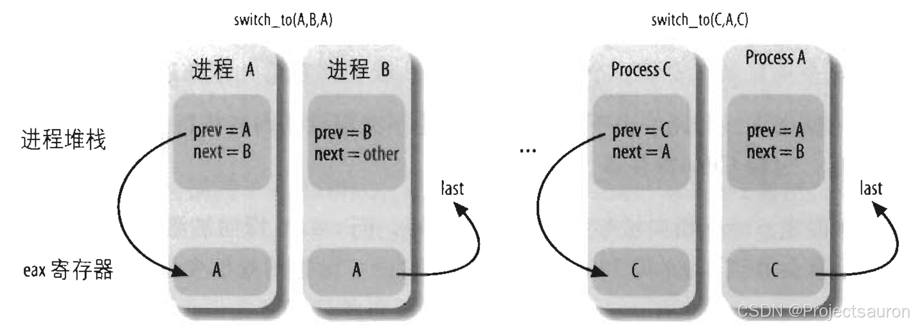

Linux 进程调度（二）之进程的上下文切换
@toc
一、概述
进程的上下文切换是指在多任务操作系统中，当操作系统决定要切换当前运行的进程时，将当前进程的状态保存起来，并恢复下一个要运行的进程的状态。上下文切换是操作系统实现进程调度和实现多任务的关键机制之一。
操作系统一个非常重要的功能就是进程的管理，通过调度策略选择合适的进程来执行，对于单个 CPU 而言，进程是串行分时执行，这就需要内核支持进程切换，挂起一个正在 CPU 中执行的进程，恢复执行之前挂起的进程。
CPU 和寄存器是所有进程共用的，CPU 在运行任何 task 之前，必须地依赖一些环境，包括 CPU 寄存器和程序计数器，除此之外，进程运行过程中还需要用到虚拟内存。进程在切换过程中，主要的工作就是切换进程空间（虚拟内存）切换 CPU 寄存器和程序计数器。
二、上下文切换的实现
进程切换由两部分组成：
- 切换页全局目录安装一个新的地址空间；
- 切换内核态堆栈及硬件上下文。
Linux 内核中由 context_switch 实现了上述两部分内容。
- 调用
switch_mm完成用户空间切换； - 调用
switch_to完成内核栈及寄存器切换。
1、context_switch
下面是上下文切换的内核源码，完整的源码见目录 kernel/sched/core.c 的 context_switch 函数：
1 | static inline struct rq * |
执行流程如下：
- 通过进程描述符
next->mm是否为空判断当前进程是否是内核线程，因为内核线程的内存描述符mm_struct *mm总是为空。 - 如果是内核线程则借用 prev 进程的
active_mm，对于用户进程，active_mm == mm；对于内核线程，mm = NULL，active_mm = prev->active_mm。 - 如果
prev->mm不为空，则说明 prev 是用户进程，调用 mmgrab 增加mm->mm_count引用计数。 - 对于内核线程，会启动懒惰 TLB 模式。懒惰 TLB 模式是为了减少无用的TLB刷新。
enter_lazy_tlb与体系结构相关。 - 如果是用户进程则调用
switch_mm(或switch_mm_irqs_off) 完成用户地址空间切换，switch_mm(或switch_mm_irqs_off) 与体系结构相关。 - 调用
switch_to完成内核态堆栈及硬件上下文切换，switch_to与体系结构相关。 switch_to执行完成后，next 进程获得 CPU 使用权，prev 进程进入睡眠状态。- 调用
finish_task_switch，如果 prev 是内核线程，则调用 mmdrop 减少内存描述符引用计数。如果引用计数为 0，则释放与页表相关的所有描述符和虚拟内存。
2、switch_mm
对于用户进程需要完成用户空间的切换，switch_mm 函数完成了这个任务。switch_mm 是与体系架构相关的函数。更确切地说，是切换地址转换表(pgd)，由于 pgd 包括进程 系统空间（==0xc000 0000 ~ 0xffff ffff==）和 用户空间（==0x0000 0000 ~ 0xbfff ffff==）的地址映射，但是由于所有进程的系统空间的地址映射都是相同的。所以实质上就是进行用户空间的切换。
Linux 5.6.4 内核调用 switch_mm_irqs_off 切换用户进程空间，对于没有定义该函数的架构，则调用的是switch_mm。x86 体系架构定义了 switch_mm_irqs_off 函数，ARM 体系架构没有定义。
1 |
函数定义为：
1 | static inline void switch_mm( struct mm_struct * prev, |
这部分核心的代码是 load_cr3，这个函数加载下一个进程页表 pgd 地址加载进 CR3 寄存器。CR3 是 CPU 的一个寄存器，它存储了当前进程的顶级页表 pgd。
如果 CPU 要使用进程的虚拟内存，内核可以从 CR3 寄存器里面得到 pgd 在物理内存的地址，通过页表就可以得到虚拟内存对应的物理地址，这样就可以得到物理内存的数据。
3、switch_to
对于内核空间及寄存器的切换，switch_to 函数完成了这个任务。
switch_to 调用到 __switch_to，该宏函数定义在目录 arch/x86/include/asm/switch_to.h：
1 |
|
switch_to 宏用于进程切换,给定了前一个进程结构体指针 prev，以及需要切换到的进程结构体指针 next，从 prev 切换到 next。
prev 和 next 是输入参数，分别表示被替换进程和新进程描述符的地址在内存中的位置。而 last 是输出参数，假设内核决定暂停进程 A 而激活进程 B，而后又激活进程 A（则必须暂停另一个进程 C，通常不同于进程 B），则它表示宏把进程 C 的描述符地址写在内存的什么位置（在 A 恢复执行后）。
在进程切换之前，宏把第一个输入参数 prev（即在 A 的内核堆栈中分配的 prev 局部变量）表示的变量的内容存入 CPU 的 eax 寄存器。在完成进程切换，A 已经恢复执行时，宏把 CPU 的 eax 寄存器的内容写入由第三个输出参数 last 所指示的 A 在内存中的位置。因为 CPU 寄存器不会在切换点发生变化，所以 C 的描述符地址也存在内存的这个位置。在 schedule() 执行过程中，参数 last 指向 A 的局部变量 prev，所以 prev 被 C 的地址覆盖。

三、观测进程上下文切换
systemtap 提供了跟踪进程释放执行权被切换出 CPU 的 probe 方法 scheduler.cpu_off ，这个 probe 的定义
如下：
1 | /** |
可以看到 cpu_off 时间其实是 sched_switch 内核 trace 事件和 context_switch 内核函数的封装，同时提供了 task_prev 和 task_next 两个有用的参数。
task_prev 表示当前进程的 task struct 结构体，也就是马上要释放执行权的 task struct，task_next 表示马上要执行的进程的 task struct 结构体。
注意，这里的进程是广义的进程，也可以是线程，本质是一个
task struct。
我们就可以通过 cpu_off 事件来统计一段时间内的进程切换情况，完整的 systemtap 脚本如下所示：
1 | global csw_count |
其中 csw_count 是 systemtap 的关联数组，虽然这名字叫数组，其实是一个字典，跟其它语言的 map/dict/hash 类似。csw_count[task_prev，task_next] 语法的含义是将 task_prev 和 task_next 两个值联合起来为字典的 key。
如果我们由进程 A 切换到 B，B 切换到 C，C 切换到 A，那么这个关联数组的形式如下：
1 | csw_count[AB]=1 |
接下来我们来执行 4 个跑满 CPU 的单线程程序，在我双核机器上每个程序会占据 50% 的 CPU 左右，开启四个终端，执行四次下面的程序：
1 | $ sha256sum /dev/zero |
top 命令的输出如下，这四个进程分别为 27458、27460、27590、27636。
1 | PID USER PR NI VIRT RES SHR S %CPU %MEM TIME+ COMMAND |
然后使用 stap 执行上面的 systemtap 脚本：
1 | Context switch COUNT |
可以看到，1s 内这四个进程切换得非常频繁。